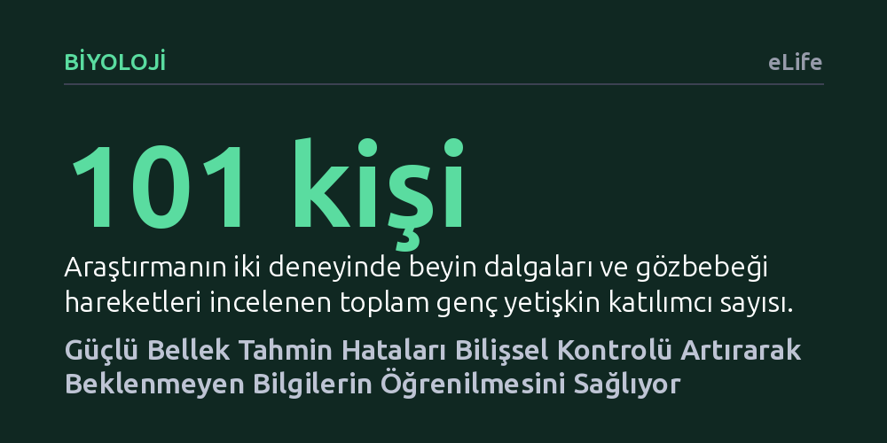

BIYOLOJI · eLife · 2026-10-26
Geçmiş deneyimlere dayalı güçlü beklentilerin boşa çıkmasının dikkati, uyarılmayı ve bilişsel kontrolü nasıl etkilediği 101 genç yetişkinde EEG ve göz izleme yöntemleriyle incelendi. Güçlü bellek tahmin hatalarının frontal teta dalgaları üzerinden bilişsel kontrolü artırdığı ve bu kontrolün beklenmeyen bilgilerin öğrenilmesini kolaylaştırdığı bulundu.
Zihnimizin güçlü beklentileri boşa çıktığında beynin pasif kalmadığını, aksine bilişsel kontrolü devreye sokarak bu şaşırtıcı yeni gerçekliği öğrenmeye öncelik verdiğini gösteriyor.

Günlük hayatımızda çevremizi geçmiş tecrübelerimizden inşa ettiğimiz zihinsel modeller üzerinden algılarız. Bir fincana uzandığımızda onun sıcak olacağını varsayar, tanıdık bir kapıyı açtığımızda arkasında ne göreceğimizi biliriz. Bu içsel tahminler doğru çıktığı sürece zihnimiz mevcut durumun güvenli ve tutarlı olduğunu düşünerek eski bilgileri çağırmaya devam eder. Ancak yaşanan gerçeklik hafızamızdaki beklentiyle çeliştiğinde—örneğin sıcak beklediğimiz fincan buz gibi olduğunda—ortaya bir bellek tahmin hatası çıkar.
Bu tür tahmin hataları hayati bir uyarı niteliğindedir; çünkü çevrenin değiştiğini ve eski kuralların artık geçerli olmayabileceğini haber verir. Araştırmacılar, zihnimizin bu tür uyuşmazlıklar karşısında dikkati ve uyarılmayı nasıl yönettiğini uzun süredir merak ediyordu. Asıl kritik soru ise beklentinin ne kadar güçlü olduğuna bağlı olarak bu tepkilerin değişip değişmediği ve beynin bu hatayı yeni bilgileri öğrenmek için bir avantaja dönüştürüp dönüştürmediğiydi.
Araştırmacılar bu soruları yanıtlamak için toplam 101 genç yetişkinin katıldığı iki aşamalı kapsamlı bir deney tasarladı. Katılımcılara önce eylem bildiren kelimeler ile nesne resimlerinin eşleştirildiği bir dizi gösterildi. Bazı eşleşmeler katılımcılara yalnızca bir kez gösterilerek zayıf bir bellek izi oluşturulurken, bazıları dört kez tekrar ettirilerek zihinde çok güçlü bir beklenti yaratıldı. Böylece katılımcıların zihninde hem sağlam hem de zayıf tahmin modelleri oluşturuldu.
Hatırlama aşamasında ise katılımcılara kelime ipucu gösterildikten hemen sonra beklenmedik bir durum yaratıldı: Güçlü veya zayıf eşleşmelerin bir kısmında, hafızadaki resim yerine tamamen farklı bir görsel ekrana getirildi. Katılımcıların bu sürpriz çelişkiye verdikleri tepkiler, 128 kanallı elektroensefalografi (EEG) ile beyin dalgaları ve yüksek hassasiyetli göz izleme sistemleriyle gözbebeği çapı üzerinden anbean kaydedildi. Son aşamada ise sürpriz bir tanıma testiyle, bu beklenmeyen yeni görsellerin ne kadar iyi akılda kaldığı ölçüldü.
Elde edilen veriler, hafızadaki beklenti ne kadar güçlüyse, boşa çıktığında beynin verdiği tepkinin de o kadar şiddetli olduğunu net bir şekilde gösterdi. Güçlü bellek tahmin hataları, zayıf olanlara kıyasla beyinde çok daha belirgin fizyolojik dalgalanmalar yarattı. Özellikle beynin ön bölgesindeki frontal teta dalgaları belirgin şekilde yükseldi; arka bölgedeki alfa dalgaları baskılandı ve gözbebekleri genişledi. Bu üçlü tepki, beynin aynı anda hem bilişsel kontrolü, hem dış dünyaya yönelen dikkati, hem de genel uyarılma seviyesini artırdığını kanıtladı.
Çalışmanın en çarpıcı bulgusu ise öğrenme aşamasında ortaya çıktı. Beklenmedik bir görselle karşılaşıldığında frontal teta dalgalarındaki artış—yani beynin bilişsel kontrol çabası—ne kadar yüksekse, katılımcıların o şaşırtıcı görseli sonradan hatırlama başarısı da o kadar yüksek oldu. Buna karşılık, gözbebeği genişlemesi ve görsel dikkatteki artış tek başına yeni öğrenmeyi belirlemedi. Kısacası, şaşkınlık ve uyarılma zihni alarma geçirse de, beklenmeyeni kalıcı hafızaya kaydeden asıl güç beynin devreye soktuğu bilişsel kontrol oldu.
Bu sonuçlar, insan beyninin sadece edilgen bir kayıt cihazı değil, tahminlerle çalışan aktif bir öğrenme makinesi olduğunu bir kez daha doğruluyor. Bir hata yaptığımızda veya beklemediğimiz bir sonuçla karşılaştığımızda gözlerimizin büyümesi ve irkilmemiz doğaldır; fakat bu çalışma, sadece uyarılmanın öğrenmek için yeterli olmadığını, beynin ön bölgesinin çaba harcayarak devreye girmesi gerektiğini ortaya koyuyor. Zihin, 'burada bir gariplik var' dediği an bilişsel kaynakları seferber ederek eski yanıltıcı bilgiyi bir kenara itiyor ve yeni gerçeği işlemeye başlıyor.
Yine de çalışmanın getirdiği sınırları gözden kaçırmamak gerekir. İki deney de üniversite çevresinden seçilmiş genç ve sağlıklı yetişkinlerle yürütüldü; bu nedenle aynı nöral mekanizmaların yaşlanan beyinlerde ya da çocuklarda nasıl işlediği henüz belirsizdir. Ayrıca araştırmacılar, dikkat ve uyarılma artışının bilişsel kontrolden doğrudan kaynaklandığını gösteren aracılık modellerinde kesin bir kanıt bulamadı. Ancak araştırmanın ortaya koyduğu kesin bir gerçek var: Güçlü bir yanılgı zihinsel kontrolü tetiklediğinde, en kalıcı dersler tam da bu kırılma anlarında öğreniliyor.